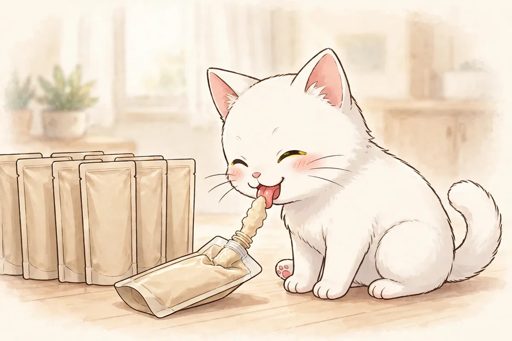

ちゅ～る総合栄養食 特集｜おやつ用との違いと選び方

「ちゅ～るはおやつ」というイメージが強いですが、実は主食として使える「総合栄養食」タイプのちゅ～る（いなば CIAO）があります。この記事では、おやつ用との違いと、種類の選び方をまとめました。この記事は一般的な飼育・ケアの情報で、病気の診断や治療のためのものではありません。食欲や体重に気になる変化があるときは、動物病院に相談してください。
おやつ用との違い
見た目はそっくりですが、栄養の設計が違います。見分け方はパッケージの「総合栄養食」の表示です。
おやつ用と総合栄養食の比較表
| 項目 | 通常のちゅ～る（一般食） | ちゅ～る総合栄養食 |
|---|---|---|
| 位置づけ | おやつ・副食です。主食にはなりません | 主食として使える設計です |
| 栄養 | 嗜好性を重視した設計です | そのフードと水で必要な栄養がとれる設計です |
| 与え方 | 主食の総合栄養食と一緒に、目安量の範囲で | パッケージの給与量表示に合わせて食事として |
| 見分け方 | 「総合栄養食」の表示がありません | パッケージに「総合栄養食」と表示されています |
まずこれ（PR）

総合栄養食ちゅ～るの種類
- まぐろ系：まぐろバラエティ、まぐろ・かつおバラエティ、まぐろ海鮮ミックスなど、お魚好きの猫に
- とりささみ系：お魚が苦手な猫にも選びやすい系統です
- 子ねこ用：1歳までの子ねこ向けに作られた、まぐろ味のバラエティがあります
- ちゅ～ぶ 総合栄養食：同じ総合栄養食のチューブタイプ（80g）。器に出して与えたいときに
1本14gの食べきりサイズで、バラエティパックは20本・40本入りなどがあります。
こんな場面で使いやすい
- 食が細くなってきたとき：ペースト状で舐めて食べられるため、噛む力が弱くなってきた猫にも与えやすい形状です
- 水分をとらせたいとき：水分を多く含むため、食事と一緒に水分を補いやすくなります
- ごほうびと食事を兼ねたいとき：おやつ感覚で食べられても、栄養は主食の設計です
与え方の目安
総合栄養食タイプは、パッケージの給与量表示（体重・年齢別）に合わせて与えてください。おやつタイプのちゅ～るは、1日4本程度を目安に、主食の総合栄養食と一緒に与えるのが基本とされています。どちらのタイプも、いつでも飲めるように新鮮な水を用意してください。
注意
- 「総合栄養食」の表示がないちゅ～るはおやつです。それだけを主食にしないでください。
- 開封後は冷蔵して早めに使い切り、長時間の置き餌は避けてください。
- 食欲がない状態が続く、急に痩せてきたといった変化があるときは、早めに動物病院へ相談してください。
- 精油（アロマオイル）は猫に使わないでください。食事の器や水に香りのついたものを混ぜることもしないでください。
よくある質問
- おやつのちゅ～ると、総合栄養食のちゅ～るは、どう見分けますか？
- パッケージの表示で見分けます。「総合栄養食」と書かれたものが主食として使えるタイプで、表示のない通常のちゅ～るは一般食（おやつ）の位置づけです。見た目が似ているので、買うときも与えるときも表示を確認してください。
- 総合栄養食のちゅ～るだけを主食にしてもいいですか？
- 総合栄養食の表示があるものは、そのフードと水で必要な栄養がとれる設計です。ただし量はパッケージの給与量表示に合わせ、体型や体調の変化を見ながら調整してください。食が細い・噛む力が弱いなど気になる状態が続くときは、動物病院に相談してください。
- 毎日あげてもいいですか？
- 給与量の目安の範囲であれば、毎日の食事や食事の補助に使えます。おやつタイプのちゅ～るは、1日の目安（4本程度とされることが多いです）を守り、主食の総合栄養食と一緒に与えるのが基本です。
おすすめ用品（PR）
この記事のテーマに合わせて選んだ用品です。詳しくは販売ページでご確認ください。


※本記事の商品リンクは楽天アフィリエイトによる広告リンクです。価格や在庫は販売ページでご確認ください。
猫のLINEスタンプ
このサイトの運営者（222キャラ工房）が作っている、猫のLINEスタンプです。毎日の連絡にどうぞ。